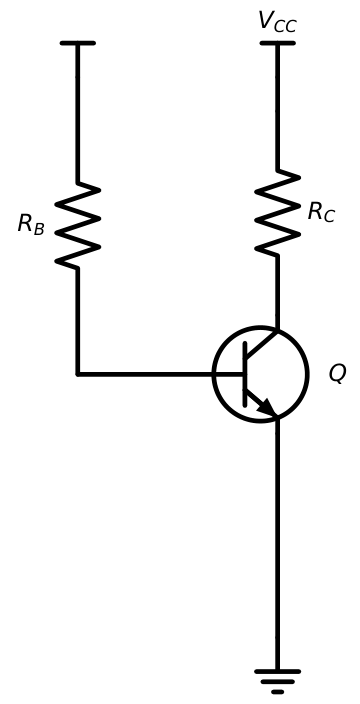
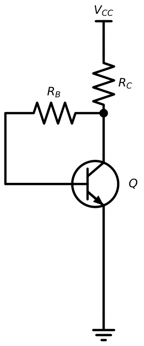
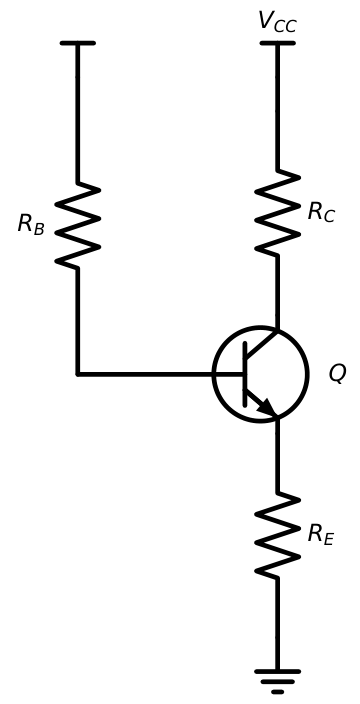
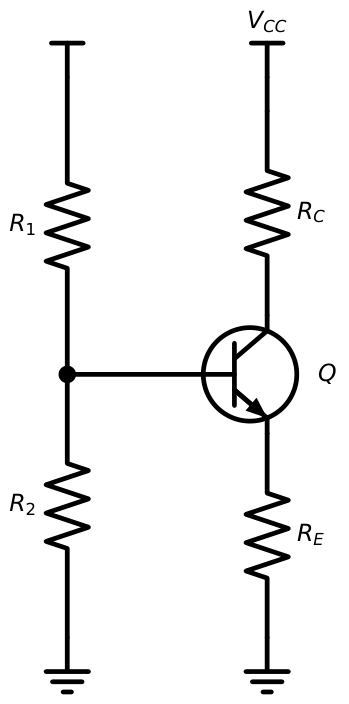
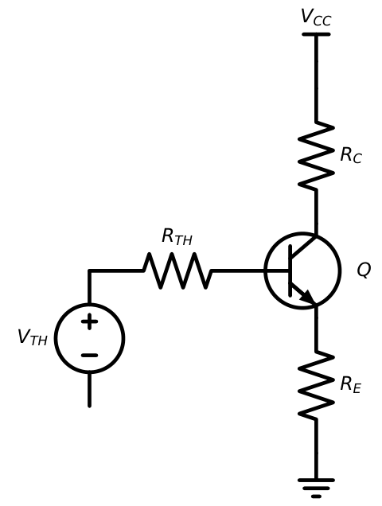
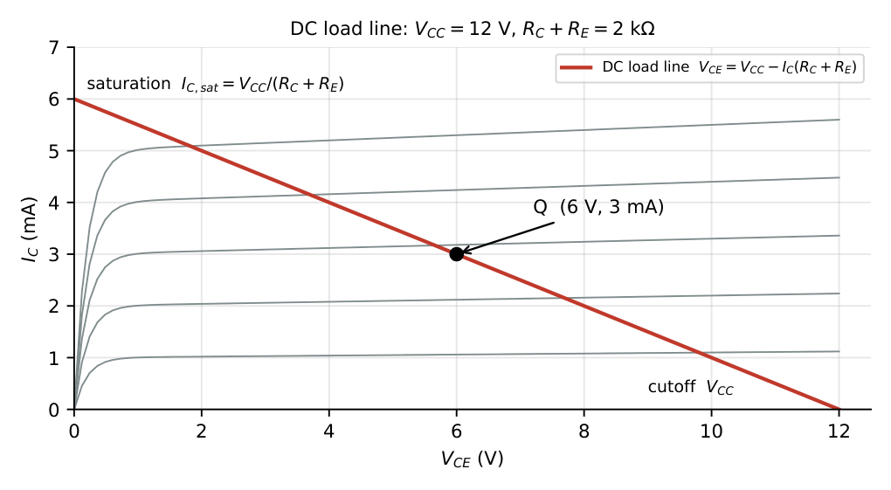
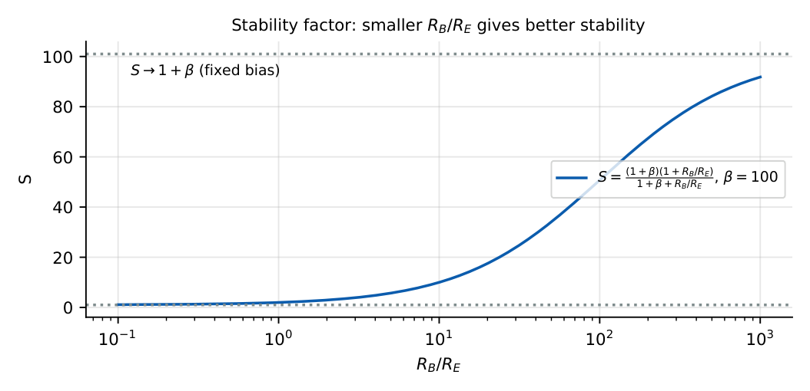
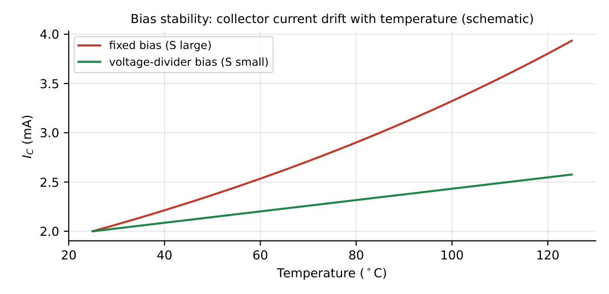

BJT Biasing
In this chapter
- 7.1 Need for biasing
- 7.2 Fixed-bias configuration
- 7.3 Collector-to-base bias
- 7.4 Emitter-bias configuration
- 7.5 Voltage-divider bias
- 7.6 Emitter degeneration
- 7.7 Q-point determination
- 7.8 Stability factor
- 7.9 Bias compensation
- 7.10 Thermal stability
- 7.11 Biasing with practical transistor models
- 7.12 GATE numerical techniques
- 7.13 Previous-year problems (pattern-based)
7.1 Need for biasing
An amplifier must operate in the active region for the entire signal swing. Biasing sets the DC Q-point \((I_{CQ},V_{CEQ})\) so that this holds, and keeps it there despite changes in \(\beta\), temperature, and device-to-device variation. A good bias circuit has a small stability factor \(S\).
7.2 Fixed-bias configuration

\(I_B=\dfrac{V_{CC}-V_{BE}}{R_B}\), \(I_C=\beta I_B\), \(V_{CE}=V_{CC}-I_CR_C\)
\(S=\dfrac{\partial I_C}{\partial I_{CO}}=\beta+1\) (the worst possible)
\(V_{CC}=12\) V, \(R_B=470\) k\(\Omega\), \(R_C=2.2\) k\(\Omega\), \(\beta=100\): \(I_B=11.3/470\,\mathrm k=24.0\ \mu\)A; \(I_C=2.40\) mA; \(V_{CE}=12-2.40\times2.2=6.7\) V. If \(\beta\) changes from \(100\) to \(200\), \(I_C=4.8\) mA and \(V_{CE}=1.4\) V: the Q-point moves drastically, so fixed bias is unsuitable for amplifiers.
7.3 Collector-to-base bias

The base resistor connects to the collector, so any rise in \(I_C\) lowers \(V_C\) and hence \(I_B\): negative feedback.
KVL: \(V_{CC}=(I_C+I_B)R_C+I_BR_B+V_{BE}\). With \(I_C=\beta I_B\):
\(I_B=\dfrac{V_{CC}-V_{BE}}{R_B+(\beta+1)R_C}\), \(V_{CE}=V_{CC}-(\beta+1)I_BR_C\).
\[S=\frac{(\beta+1)(1+R_B/R_C)}{\beta+1+R_B/R_C}.\]
\(V_{CC}=12\) V, \(R_C=2.2\) k\(\Omega\), \(R_B=220\) k\(\Omega\), \(\beta=100\): \(I_B=11.3/(220+101\times2.2)\,\mathrm k=25.6\ \mu\)A, \(I_C=2.56\) mA, \(V_{CE}=12-2.58\times2.2=6.3\) V. \(S=101\times101/(101+100)=50.8\).
7.4 Emitter-bias configuration

\(I_B=\dfrac{V_{CC}-V_{BE}}{R_B+(\beta+1)R_E}\), \(I_C=\beta I_B\), \(V_{CE}=V_{CC}-I_CR_C-I_ER_E\)
\(S=\dfrac{(1+\beta)(1+R_B/R_E)}{1+\beta+R_B/R_E}\)
\(R_B=470\) k\(\Omega\), \(R_E=1\) k\(\Omega\), \(R_C=2\) k\(\Omega\), \(\beta=100\), \(V_{CC}=12\) V: \(I_B=11.3/(470+101)\,\mathrm k=19.8\ \mu\)A; \(I_C=1.98\) mA; \(V_{CE}=12-3.96-2.0=6.0\) V. \(S=101\times471/(101+470)=83\).
The \(R_E\) provides local DC negative feedback: an increase in \(I_C\) raises \(V_E\), reducing \(V_{BE}\) and hence \(I_B\). The bias resistor reflected into the base loop is \((\beta+1)R_E\).
7.5 Voltage-divider bias

Replace \(R_1,R_2\) by \(V_{TH}=V_{CC}\dfrac{R_2}{R_1+R_2}\) and \(R_{TH}=R_1\|R_2\) (Figure 7.5). Then \[I_B=\frac{V_{TH}-V_{BE}}{R_{TH}+(\beta+1)R_E},\quad I_C=\beta I_B,\quad V_{CE}=V_{CC}-I_CR_C-I_ER_E.\]

Design rule (stiff divider): choose \(R_{TH}\le0.1(\beta+1)R_E\). Then \(I_E\approx\dfrac{V_{TH}-V_{BE}}{R_E}\), essentially independent of \(\beta\). Divider current \(\approx10I_B\).
\(V_{CC}=12\) V, \(R_1=36\) k\(\Omega\), \(R_2=12\) k\(\Omega\), \(R_C=3\) k\(\Omega\), \(R_E=1\) k\(\Omega\), \(\beta=100\). \(V_{TH}=3\) V, \(R_{TH}=9\) k\(\Omega\). \(I_B=2.3/(9+101)\,\mathrm k=20.9\ \mu\)A; \(I_C=2.09\) mA; \(I_E=2.11\) mA; \(V_E=2.11\) V; \(V_{CE}=12-6.27-2.11=3.6\) V. The approximate formula gives \(I_E=2.3\) mA (10% high; \(R_{TH}/(\beta+1)R_E=0.09\)). If \(\beta\) doubles to \(200\), \(I_B=2.3/(9+201)=11.0\ \mu\)A, \(I_C=2.19\) mA: only \(4.8\%\) change instead of \(100\%\).
7.6 Emitter degeneration
The emitter resistor \(R_E\) in the bias network is degeneration for DC. For AC, if \(R_E\) is unbypassed it lowers the gain (Chapter 9), improves linearity, and raises the input resistance to \(\approx(\beta+1)(r_e+R_E)\). A bypass capacitor \(C_E\) across \(R_E\) restores the full gain while keeping DC stability. The design trade-off: a larger \(R_E\) improves bias stability but eats headroom (\(V_E\) is dropped from the supply).
7.7 Q-point determination

\(V_{CE}=V_{CC}-I_C(R_C+R_E)\) (with \(I_E\approx I_C\))
Intercepts: \(V_{CE}=V_{CC}\) (cutoff) and \(I_C=V_{CC}/(R_C+R_E)\) (saturation, ignoring \(V_{CE(sat)}\)).
Design for \(I_C=3\) mA, \(V_{CE}=6\) V, \(V_{CC}=12\) V, \(\beta=100\). Choose \(V_E=1.5\) V \(\Rightarrow R_E=1.5/3=0.5\) k\(\Omega\). \(R_C=(12-6-1.5)/3\,\mathrm{mA}=1.5\) k\(\Omega\). \(V_B=1.5+0.7=2.2\) V. \(I_B=30\ \mu\)A; divider current \(=10I_B=0.3\) mA: \(R_2=2.2/0.3\,\mathrm{mA}=7.3\) k\(\Omega\), \(R_1=(12-2.2)/0.33\,\mathrm{mA}=29.7\) k\(\Omega\).
7.8 Stability factor
Collector current depends on three temperature-sensitive quantities \(I_{CO}\) (leakage), \(V_{BE}\) and \(\beta\). Define \[S=\frac{\partial I_C}{\partial I_{CO}},\qquad S'=\frac{\partial I_C}{\partial V_{BE}},\qquad S''=\frac{\partial I_C}{\partial\beta}.\]

| Circuit | \(S\) |
|---|---|
| Fixed bias | \(\beta+1\) |
| Collector-to-base | \(\dfrac{(\beta+1)(1+R_B/R_C)}{\beta+1+R_B/R_C}\) |
| Emitter bias / voltage divider | \(\dfrac{(\beta+1)(1+R_{TH}/R_E)}{\beta+1+R_{TH}/R_E}\) |
| Ideal (\(R_{TH}/R_E\to0\)) | \(1\) |
In the voltage-divider circuit with \(R_{TH}/R_E=9\): \(S=101\times10/110=9.2\), a ten-fold improvement over fixed bias.
7.9 Bias compensation
Additional techniques to stabilise the Q-point:
- Diode compensation: a diode in the divider (same technology) tracks the \(-2.2\) mV/\({}^\circ\)C change in \(V_{BE}\).
- Thermistor compensation: a negative-temperature-coefficient resistor in the divider or in series with \(R_C\) counteracts the increase of \(I_C\) with temperature.
- Sensistor: positive-temperature-coefficient element for the same purpose.
7.10 Thermal stability
\(I_{CBO}\) doubles per \(10^\circ\)C, \(V_{BE}\) falls about \(2.2\) mV/\({}^\circ\)C, and \(\beta\) rises with temperature. Higher \(I_C\) raises dissipation \(P_D=V_{CE}I_C\), which raises junction temperature, which raises \(I_C\) again. If this positive feedback has a gain greater than one, thermal runaway destroys the device. The condition to avoid it is \[\frac{\partial P_D}{\partial T_j}<\frac1{\theta_{JA}}\quad\Rightarrow\quad\text{smaller }S\text{ (stiffer bias) and a good heat sink.}\]

7.11 Biasing with practical transistor models
Real devices: (1) \(V_{BE}\) depends on \(I_C\) (\(60\) mV per decade); (2) Early effect adds \(V_{CE}/V_A\) to \(I_C\); (3) saturation voltage \(V_{CE(sat)}\approx0.1\)–\(0.3\) V; (4) \(\beta\) varies by \(2\)–\(3\times\) between devices. In GATE numerical problems the specification is: \(V_{BE}=0.7\) V, \(V_{CE(sat)}=0.2\) V (unless stated), and \(\beta\) given.
7.12 GATE numerical techniques
(1) For a divider circuit with a stiff divider, use \(I_E\approx(V_B-0.7)/R_E\) and skip \(\beta\). (2) For collector-to-base bias, remember the factor \((\beta+1)R_C\) in the base loop. (3) For emitter bias, reflect \(R_E\) to the base as \((\beta+1)R_E\). (4) A question with “\(\beta\) doubles” asks for sensitivity: compute \(I_C\) before and after; the percentage change measures stability. (5) If \(V_{CE}<0.2\) V after solving in active mode, redo the solution in saturation.
7.13 Previous-year problems (pattern-based)
Q1. In the fixed-bias circuit \(V_{CC}=15\) V, \(R_B=750\) k\(\Omega\), \(R_C=1.5\) k\(\Omega\), \(\beta=100\), \(V_{BE}=0.7\) V. \(V_{CE}\) is V.
Q2. The stability factor of a fixed-bias circuit with \(\beta=99\) is (A) 1 (B) 99 (C) 100 (D) 50.
Q3. For the voltage-divider bias with \(R_1=R_2=10\) k\(\Omega\), \(V_{CC}=12\) V, \(R_E=0.5\) k\(\Omega\), \(\beta=\infty\), \(V_{BE}=0.7\) V. The emitter current (mA) is .
Q4. In the collector-to-base circuit \(V_{CC}=10\) V, \(R_C=1\) k\(\Omega\), \(R_B=100\) k\(\Omega\), \(\beta=100\). \(I_C\) (mA) is closest to (A) 4.6 (B) 4.4 (C) 2.5 (D) 9.3.
Q5. An NPN in the emitter-bias circuit with \(R_B/R_E=100\) and \(\beta=100\) has \(S=\) .
Answers: Q1: \(I_B=14.3/750\,\mathrm k=19.07\ \mu\)A; \(I_C=1.907\) mA; \(V_{CE}=15-2.86=12.1\) V. Q2: (C). Q3: \(V_{TH}=6\) V; \(I_E=(6-0.7)/0.5=10.6\) mA (infinite \(\beta\)) (\(R_{TH}\) drops out). Q4: \(I_B=9.3/(100+101)\,\mathrm k=46.3\ \mu\)A; \(I_C=4.63\) mA (A). Q5: \(S=101\times101/(101+100)=50.8\).
- Design a divider bias for \(I_C=1\) mA, \(V_{CC}=10\) V, \(V_E=1\) V, \(V_C=6\) V, \(\beta=100\). [\(R_E=1\) k, \(R_C=4\) k, \(R_2\approx17\) k, \(R_1\approx75\) k]
- Compute \(S\) for the divider circuit with \(R_{TH}=5\) k\(\Omega\), \(R_E=1\) k\(\Omega\), \(\beta=100\). [\(101\times6/106=5.7\)]
- Temperature rises \(50^\circ\)C; \(V_{BE}\) changes by? [\(-110\) mV]
- Explain why \(R_E\) improves stability. [DC negative feedback: \(\Delta I_C\to\Delta V_E\to-\Delta V_{BE}\)]